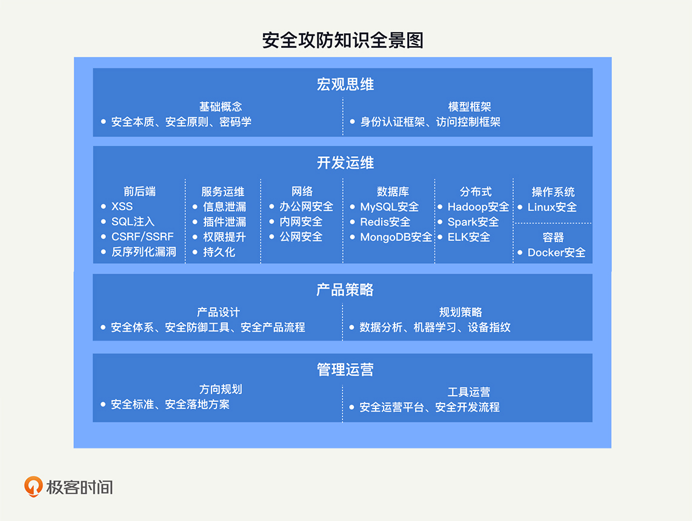

- 00 开篇词 别说你没被安全困扰过.md.html
- 01 安全的本质：数据被窃取后，你能意识到问题来源吗？.md.html
- 02 安全原则：我们应该如何上手解决安全问题？.md.html
- 03 密码学基础：如何让你的密码变得“不可见”？.md.html
- 04 身份认证：除了账号密码，我们还能怎么做身份认证？.md.html
- 05 访问控制：如何选取一个合适的数据保护方案？.md.html
- 06 XSS：当你“被发送”了一条微博时，到底发生了什么？.md.html
- 07 SQL注入：明明设置了强密码，为什么还会被别人登录？.md.html
- 08 CSRF_SSRF：为什么避免了XSS，还是“被发送”了一条微博？.md.html
- 09 反序列化漏洞：使用了编译型语言，为什么还是会被注入？.md.html
- 10 信息泄露：为什么黑客会知道你的代码逻辑？.md.html
- 11 插件漏洞：我的代码看起来很安全，为什么还会出现漏洞？.md.html
- 13 Linux系统安全：多人共用服务器，如何防止别人干“坏事”？.md.html
- 14 网络安全：和别人共用Wi-Fi时，你的信息会被窃取吗？.md.html
- 15 Docker安全：在虚拟的环境中，就不用考虑安全了吗？.md.html
- 16 数据库安全：数据库中的数据是如何被黑客拖取的？.md.html
- 17 分布式安全：上百个分布式节点，不会出现“内奸”吗？.md.html
- 18 安全标准和框架：怎样依“葫芦”画出好“瓢”？.md.html
- 19 防火墙：如何和黑客“划清界限”？.md.html
- 20 WAF：如何为漏洞百出的Web应用保驾护航？.md.html
- 21 IDS：当黑客绕过了防火墙，你该如何发现？.md.html
- 22 RASP：写规则写得烦了？尝试一下更底层的IDS.md.html
- 23 SIEM：一个人管理好几个安全工具，如何高效运营？.md.html
- 24 SDL：怎样才能写出更“安全”的代码？.md.html
- 25 业务安全体系：对比基础安全，业务安全有哪些不同？.md.html
- 26 产品安全方案：如何降低业务对黑灰产的诱惑？.md.html
- 27 风控系统：如何从海量业务数据中，挖掘黑灰产？.md.html
- 28 机器学习：如何教会机器识别黑灰产？.md.html
- 29 设备指纹：面对各种虚拟设备，如何进行对抗？.md.html
- 30 安全运营：“黑灰产”打了又来，如何正确处置？.md.html
- 加餐1 数据安全：如何防止内部员工泄露商业机密？.md.html
- 加餐2 前端安全：如何打造一个可信的前端环境？.md.html
- 加餐3 职业发展：应聘安全工程师，我需要注意什么？.md.html
- 加餐4 个人成长：学习安全，哪些资源我必须要知道？.md.html
- 加餐5 安全新技术：IoT、IPv6、区块链中的安全新问题.md.html
- 模块串讲（一）Web安全：如何评估用户数据和资产数据面临的威胁？.md.html
- 模块串讲（三）安全防御工具：如何选择和规划公司的安全防御体系？.md.html
- 模块串讲（二）Linux系统和应用安全：如何大范围提高平台安全性？.md.html
- 结束语 在与黑客的战役中，我们都是盟友！.md.html
- 捐赠
00 开篇词 别说你没被安全困扰过
你好，我是何为舟，很高兴能在这里和你聊安全。
我喜欢安全，本科和硕士读的都是信息安全专业。在工作中，我会把自己想象为一名仗剑走天涯的侠客，哪里有安全问题，我便会拔刀相助。我喜欢那种解决完问题后的快感，那场景就好像有人和我说，“感谢大侠的救命之恩”。
我现在是美团点评的安全平台负责人。在加入美团之前，我曾任职于新浪微博，负责网络安全和业务安全方向的整体研发和设计工作，这其中包括攻防对抗、安全工具开发、风控系统等。
作为一个安全侠客，我打过全球流行的网络安全竞赛CTF，做过渗透测试，还考取了信息系统安全专业认证。在安全这件事情上，我还真有挺多话题想和你聊。
为什么要学安全？
首先，不知道你是否还记得2017年9月美国知名征信公司 Equifax 的数据泄露事件，这事导致了1.45 亿美国居民个人隐私信息被泄露。受事件影响，Equifax公司市值瞬间就蒸发了30亿美元，最后还赔偿给用户4.25 亿美元，可谓损失惨重。后来，Equifax公司复盘了安全事故的原因，发现这个事故的罪魁祸首，居然是一个早已被披露出来的安全漏洞，叫作Apache Struts，真是让人哭笑不得。
你说这事难吗？现在看起来，一点都不难。但问题出现在什么地方呢？我觉得核心点是Equifax公司的工程师可能没有安全意识，也没有把安全当成一个优先级很高的事情去做。
同样的事情其实还有很多，我觉得Equifax公司的低级安全事件，应该给我们每一个程序员敲响警钟，我们在追求开发效率的同时，一定要把“安全”这俩字“放在心上”。
其次，从公司的角度来说，安全同样是不可或缺的一环。
任何一家公司都会存在安全的刚需问题，肯定需要有人来解决它。但是，公司招人组建安全团队，需要投入较大的成本。而这部分安全的成本，很多时候并不产生直接的收益。因此，对很多公司来说，业务都没成熟，就去考虑安全，是不合算的。这也就产生了一种现状：小公司没有安全，大公司都在“补”安全。
从安全发展角度上来讲，这种前期不重视安全，后期再补安全的做法，是很不利的。一方面，在发展前期留下了极大的安全隐患，公司可能在一次攻击后就彻底垮台了。另一方面，后期补安全，会因为安全去改动已经发展成熟的业务，导致安全和业务产生冲突，从而阻碍安全发展。
于是，矛盾点就产生了：很多规模不大的公司不愿意投入成本去做安全，但从长远考虑又需要安全。那该怎么办呢？我认为，如果业务的开发和管理人员，能够具备基础的安全知识，尽早做好安全规划，就能够以很低的成本满足公司前期的安全诉求。
因此，如果你想要在企业的全面发展中占据一席之地，或者是在管理方向上走得更“远”，那么我建议你，尽早地掌握安全知识，掌握企业安全防护的专业技巧。
我们究竟该怎么学习安全呢？
你可能会存在这样的顾虑：安全可能需要花上几年时间学习和实践才能小有所成，时间成本是否有点高呢？确实，想要真正做好安全，时间的磨砺是不可或缺的。但是，这并不意味着你需要几年后再去从事安全相关的工作。正如上面所说的，公司初期的安全需求相对简单。因此，你完全可以快速入门，然后投入到公司的安全需求中去。接下来，你就可以随着公司的发展，边学习边做安全。
那么，学习安全是否门槛很高、难度很深呢？学习安全的过程中，你可能需要懂前端、懂后端、懂操作系统、懂网络。需要懂的知识非常多，但幸运的是，对于安全入门来说，宽度比深度更重要。因此，对于这些基础知识，深刻理解自然更好，但是懂些皮毛也足够了。在专栏中，我也会由浅入深，对安全需要的基础知识进行讲解。
你还可能会问：没有实践的机会，我能不能学好安全呢？确实，实践出真知，个人安全能力的提升，需要经过不断的磨练。跟着专栏进行学习，我相信你可以具备解决安全问题的基本能力。为了帮助你快速实践，我会通过思考题的形式，去引导你分析自己所在公司的现状和未来。你可以将你的所思所想发表出来，共同探讨，进行“沙盘演练”。
总结来说，本次专栏的定位是安全基础课。在专栏的覆盖面上，我会力求全面，让你能够了解安全的方方面面。我希望，通过对安全专栏的学习，你能够具备安全思维，在遇到安全问题的时候，有解决问题的方向和路径。
这里，我为你准备了一张安全攻防知识全景图，包含你需要掌握的所有相关知识。建议你最好保存下来，在之后的学习过程中，有针对性地去训练自己。

在内容设计上，我根据安全方向的不同，把专栏内容划分为五个模块。
在第一模块“安全基础”中，我首先会为你系统地讲解安全基础概念、思考框架，以及解决安全问题的思路，带你从理论层次认知安全，让你能够系统地看待安全问题、评估安全需求，为你的安全学习指明方向。
在第二模块“Web安全”中，我会为你讲述Web安全中一些经典安全问题的成因，结合当下App端各类接口中存在的Web漏洞，让你了解常见的Web攻防手段，帮助你在开发时，从源头切断安全问题。
在第三模块“Linux系统和应用安全”中，我会为你讲解底层攻击的各种手段，以及它们会产生的影响，让你掌握其中的原理，能够在部署底层设施时，遵守安全事项，避免产生运维层面的安全问题。
在第四模块“安全防御工具”中，我会结合真实的安全防护案例，为你介绍六大安全防御工具的使用方法和适用场景。另外，我还会总结一些常见的安全防御手段，引导你建设系统级的安全防御体系。
在第五模块“业务安全”中，我会为你讲解“黑灰产”的常见手段，教你识别查找“黑灰产”的方法及防护策略。另外，我还会联系实际业务场景，手把手教你系统解决业务安全问题。
我希望学完这个专栏之后，你能够既懂“攻”又懂“防”，既懂理论也懂实践。比如，你既能知道怎么发起一个简单的SQL注入攻击，也能够知道怎么从代码开发层次进行防御，同时也会了解到怎么通过和代码解耦合的WAF去做防御。又比如，你会知道怎么去规划和设计安全体系，以及在不同的阶段应该做什么事。
除了正文之外，我还设计了几篇不定期加餐，来和你聊一聊目前一些热门的安全方向，希望能够加深你对安全的理解。同时，加餐中也包含了我对个人发展的一些思考和建议。目前，安全行业普遍存在人才供给不足的现象，很多岗位招不到合适的人。因此，我希望结合我的个人经验，能够给想往安全专业发展的同学一些指引，教你成为“合适的人”。
最后，我想说，安全是一个特别重实践的领域，如果你有时间，一定要多练习，多总结。在课程设计中，我在每一节课后都留了思考题，希望你能够结合知识点，给出自己的思考。很多事情都没有标准答案，你梳理的过程本身也就是强化思考的过程，所以，千万不要有心理负担，大胆表达就可以了，我一定会尽我所能及时给你反馈。
如一开始所说，我喜欢安全，喜欢侠客精神。正在看这篇文章的你，我相信你也是如此。希望在接下来3个月的“刀光剑影”里，我们能互相切磋，一起成长！
© 2019 - 2023 Liangliang Lee. Powered by gin and hexo-theme-book.